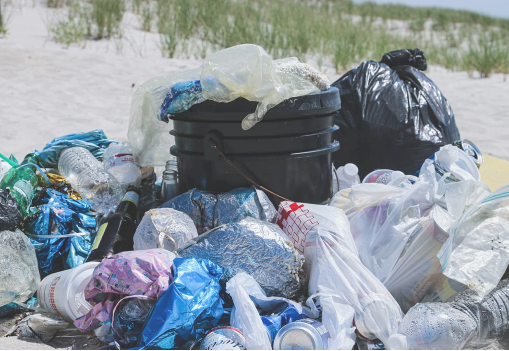

비닐봉투 우체통
받는 사람, 지구
보내는 사람, 동국인
지구에게
마음을
전하세요
01. 비닐봉투 우체통 이야기
A. 재활용도 안되는 비닐봉투
B. 재활용이 아닌 재사용
C.장바구니를 사용하면 안돼?
D.우리의 마음이 닿을 곳, 동국
02. 비닐봉투 우체통을 소개합니다
A. 두 개의 우체통
B. 마음을 전달하는 방법
C. 활동 메뉴얼
03. 비닐봉투 우체통이 실현된다면
A. 기대되는 점
B. 향후 목표
비닐봉투 우체통
받는 사람, 지구
보내는 사람, 동국인
지구에게
마음을
전하세요
01. 비닐봉투 우체통 이야기
A. 재활용도 안되는 비닐봉투

재활용하면 뭐하나
비닐봉투의 물질 재활용률 '극악'
환경오염이 낳은 초자연적인 재앙들은 나날이 그 심각성이 고조되고 있다. 단숨에 지구인의 뜨거운 감자로 부상한 환경이슈, 환경보호 활동은 더 이상 선택의 영역이 아니라 생존과 직결된, 필수의 영역으로 돌입한 것이다.
그러나 그린피스가 발표한 한국인 쓰레기 연간 소비량에 따르면 한국인의 PET병, 플라스틱 컵, 비닐봉투 소비량은 각각 49억개, 33억개, 235억개, 전체 연간 소비량 586,500t 중 배출된 쓰레기가 물질재활용 되는 비율은 20%가 조금 넘는 것으로 파악됐다.
특히 한반도 70%를 뒤덮고도 남는 양적 우위의 비닐봉투는 보통 식품 포장재에서 발생한 것이었는데, 물질재활용률은 극악으로 보통 소각해 에너지 회수 방식으로 재활용되고 있었다. 심지어
생분해 비닐봉투조차 소각된다.
봉투의 소각률이 높은 이유는 오염률이 높아 선별과 재활용이 까다롭기 때문이었다. 이러한 방식은 이상적인 폐기물처리법과는 거리가 멀다.
B. 재활용이 아닌 재사용
처치곤란 비닐봉투,
재활용방법은 없을까?
앞서 설명했듯, 비닐봉투는 재활용하기엔
너무나 제약조건이 많다.
그렇다면, "재사용"하면 어떨까?
X
1
비닐봉투를 한 번이라도 재사용한다면
생산량을 줄일 수 있어 확실한 환경보호가 가능하다
=
n
C. 장바구니를 사용하면 안돼?
현재도 비닐봉투를 대체하기 위해
수많은 다회용 장바구니가 생산되고 있다.
그런데도 일회용 비닐봉투가 쓰이는 이유는
다회용 장바구니가 대안되기 어려운 영역이 있기 때문이라 판단했다.
일방향 운반 목적의 음식 배달과 택배가 대표적인 예다.
이에 본 조는 일회용 배달 봉투와 택배 봉투의 재사용 방법을 고안했다. 단 2회라도 재사용하자는 목표로
다음과 같이 기획하였다.
1. 배달 봉투 등으로 쓰레기 분리수거·배출
2. 택배 봉투 재사용
분리수거 배출
택배봉투 재사용
D. 우리의 마음이 닿을 곳, 동국
비닐봉투 재사용 아이디어를 적용할 대상을 찾고자 쓰레기연구소·쓰레기센터에게 수차례 자문과 조언을 받았다.
"가장 중요한 것은 구체성이에요. 이 아이디어가 현 상황에서 시행가능한지, 그리고 공감대를 끌어올 수 있는지, 그리고 그것을 유지할 수 있는지 생각해보면 좋을 것같아요."
- 중구청 쓰레기연구소 새롬 전 담당관 -
조언을 토대로 1) 시행 가능성 2) 참여 가능성 3) 관리 가능성을 고려하여 서울동국대학교를 대상으로 조사를 시작하였다.
동국대학교 내부
쓰레기가 무분별하게 버려지고 있다.
조사결과, 동국대학교 내부 쓰레기 문제가 꽤나 심각하다는 것을 알 수 있었다.
학교 내 쓰레기통 대부분이 일반 쓰레기, 재활용 표기가 없다. 학내 표기 없는 쓰레기통은 대략 실외 16개, 실내 50개로 총 66개가 존재한다. 이러한 표기 없는 쓰레기통 안에서 일반 쓰레기와
뒤섞인 재활용 쓰레기는 이물질로 오염돼 분리수거가 어렵다.
이를 통해 동국대학교내에서의 1) 시행 가능성을 재고할 수 있었다.
이러한 현 상황을 학생들은 어떻게 생각하고 있을까.
2021년 11월, 학내 환경 소모임 필어스가 진행한 자체 설문조사 결과, 전체 응답자 중 96.1%는 학내 분리수거 시스템 개선이 필요하다고 답했고, 분리수거를 하지 않는 이유로 39.4%가
‘분리수거함이 어디 있는지 잘 몰라서’, 38.1%가 ‘쓰레기가 구분 없이 버려지는 등 관리가 부실해서’라고 밝혔다.
필어스(동국대학교) 자체 설문조사(2021, 11월)
필어스의 조사를 통해 우리학교 구성원은 미흡한 분리수거 시스템으로 인해 야기되는 학내 쓰레기 문제를 명확히 인지하고 있으며 이를 개선하고자 하는 의지 또한 충분하다는 것을 알 수 있었다.
이를 통해 2) 참여 가능성 또한 재고 할 수 있었다. 동국대학교에서 실현 가능성은 충분했다.
하지만, 어떻게 비닐봉투 재사용을 유지시킬 수 있을지에 대해서는 온전히 우리의 생각으로만 해결을 해야했다.
그래서 우리는, 비닐봉투 우체통을 기획하였다.
02. 비닐봉투 우체통을 소개합니다
A. 두 개의 우체통
Ⅰ 유형
Ⅱ 유형
지구인의 마음을 일회용 비닐/택배 봉투에 담아 지구에게 보낸다는 의미에서 우체통 콘셉트를 선정했다.
우체통은 2가지 유형으로, 쓰레기통의 근처에 비치될 부착형의 1유형과 기숙사 내 택배 보관함과 동국대점 우체국에 비치될 기립형의 2유형으로 구성된다.
우체통 정면 및 포스터에 부착된 QR코드를 사용자의 휴대폰 카메라에 인식하면 본 프로젝트의 기획과정과 내용, 사용방법 등을 담은 웹 전시 홈페이지로 연결된다. 이때 우체통과 포스터 및 QR코드는
친환경(각각 폐플라스틱 또는 폐현수막, 재생용지)으로 제작된다.
이의 제작은 플라스틱 베이커리(쓰레기센터가 추천한 업사이클링 업체) 또는 동국대 내 3D프린팅 실습소인 MARU에서 수행한다. MARU에서 수행할 경우 학생들이 직접 우체통을 만드는 실습 프로그램을
운영하여 본 프로젝트에 대한 참여율 제고 및 MARU 활성화를 고무한다. 덧붙여 포스터 및 비닐봉투우체통의 시제품은 웹 전시 및 마포구청사에 전시될 계획이다. 전시라는 예술적 장치를 활용해 학생 및
시민의 강력한 공감을 이끌어내, 참여를 독려하고자 한다.
B. 마음을 전달하는 법
사용시
Ⅰ 유형
Ⅱ 유형
1. 준비되어있는 비닐봉투를 뽑아주세요
2. 비닐봉투로 분리수거를 해주세요
3. 배출할 비닐봉투를 문 앞에 모아주세요
1. 밑의 칸을 열어 택배 봉투를 가져가주세요
2. 준비되어있는 테이프로 밀봉 후 배송합니다
반납시
Ⅰ 유형
Ⅱ 유형

1. 깨끗한 비닐봉투를 준비해주세요
2. 비닐봉투 우체통에 넣어주세요
1. 택배봉투를 칼로 개봉해주세요
2. 개봉하신 택배봉투를 우체통에 넣어주세요
C. 활동 메뉴얼
| 학생 |
㉠ 교내, 기숙사 내 쓰레기를 재사용 비닐봉투에 분리수거 해 쓰레기통에 버린다. ㉡ 택배 발송 시 재사용 택배봉투를 이용한다. ㉢ 에코리더 학생은 이를 운영·관리한다. |
| 청소노동자 | 기존 방식처럼 이를 통째로 1개의 포대자루에 담아 수거한다. |
| 총무처 | 이를 위한 제반 업무를 수행하며 특히 에코리더 운영·관리를 전담한다. |
| 교내 구성원 | 쓰레기 특별 교육을 이수하여 사안의 심각성, 개선의 시급성을 충분히 인지하고 본 프로젝트에 성실히 참여한다. 2022.08.23. 인터뷰에서 쓰레기센터 이동학 대표는 해당 프로젝트가 캠퍼스 사업으로 선정될 경우, 교육할 의향이 있다고 밝혔다. |
| 기타 | 사업 확정시 2022년 9월부터 이행 |
03. 비닐봉투 우체통이 실현된다면
A. 기대되는 점
1. 기존의 분리수거함과 달리 학생들이 분리해 모은 쓰레기 봉지만을 수거하면 되므로, 청소노동자가 쓰레기봉지를 꺼내고, 다시 끼우는 반복 작업을 하지 않아도 되기 때문에 비교적 노동 강도가 덜 하다.
2. 교내 무분별한 쓰레기 배출 개선을 통해 쓰레기 분리수거 및 배출의 절차 축소와 비용 절감을 기대할 수 있다.
3. 웹 전시를 통해 본 프로젝트의 기획과정과 내용, 그리고 동국대 내 사업 결과를 대내외로 선전함으로써 에코 대학의
선발주자로서
동국대학교의 위상을 드높일 수 있다. (어차피 해야 할 일이라면 솔선수범하여 에코 대학의 이미지를 선취해 이미지를 제고하는 것이 유리하다.)
4. 동국대학교의 환경보호 활동은 곧 에코 중구로 나아가는 발판이 되어, 지역사회에 생기와 활력을 불어넣는 중요한 기회가 될 수
있다.
5. 일상 속 환경보호 활동을 실천하며 시민의식을 함양하고, 환경의 소중함을 일깨울 수 있다.
B. 향후 목표
"비닐봉투 재사용"이라는 메시지는 동국대에서만 국한될 것이 아니다. 범위를 더욱 확대하여 전국의 캠퍼스와 일반 시민들도 참여할 수 있는 프로젝트가 되는것이 본 조의 목표다.
민주당 전 최고위원 이동학 의원과의 인터뷰
22.08.23. 인터뷰에서 쓰레기센터 대표이자 민주당 전 최고위원 이동학 의원 및 그 소속 직원은,
재미있는 발상이라는 평가와 함께, 해당 프로젝트를 구체화해 캠퍼스 사업으로 선정된다면, 이의 사업 결과 및 평가 내용을 바탕으로 교육부 또는 환경부의 사업에 공모해 추가 예산을 지원받을 수 있을
것이라고 첨언했다.
우리의 행동이 작은 움직임일지라도, 큰 변화를 일으키는 도미노의 시작점이 되기를 기원한다.